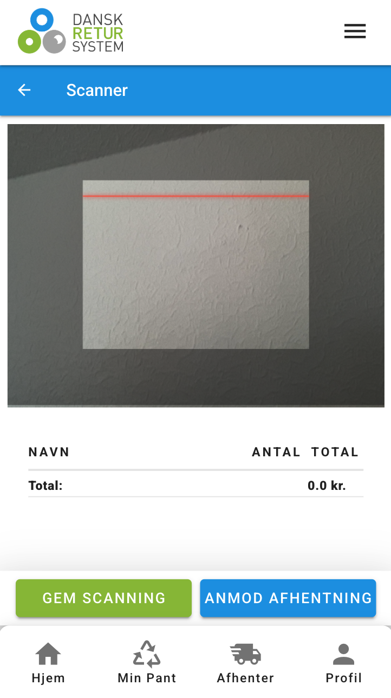
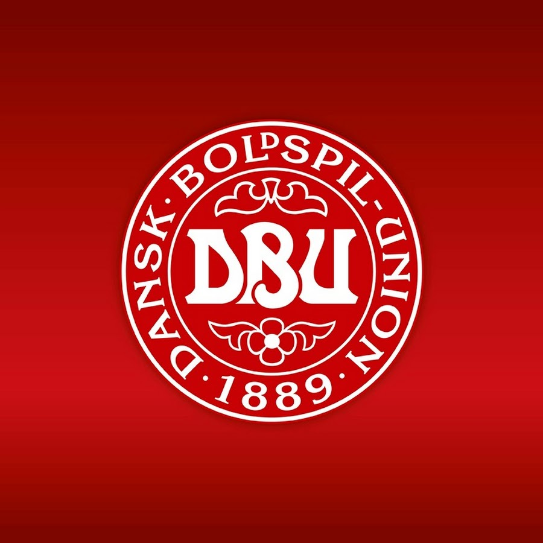
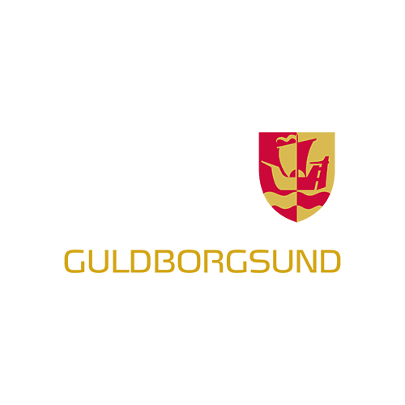
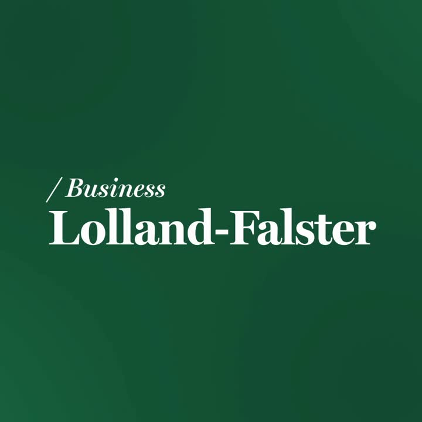
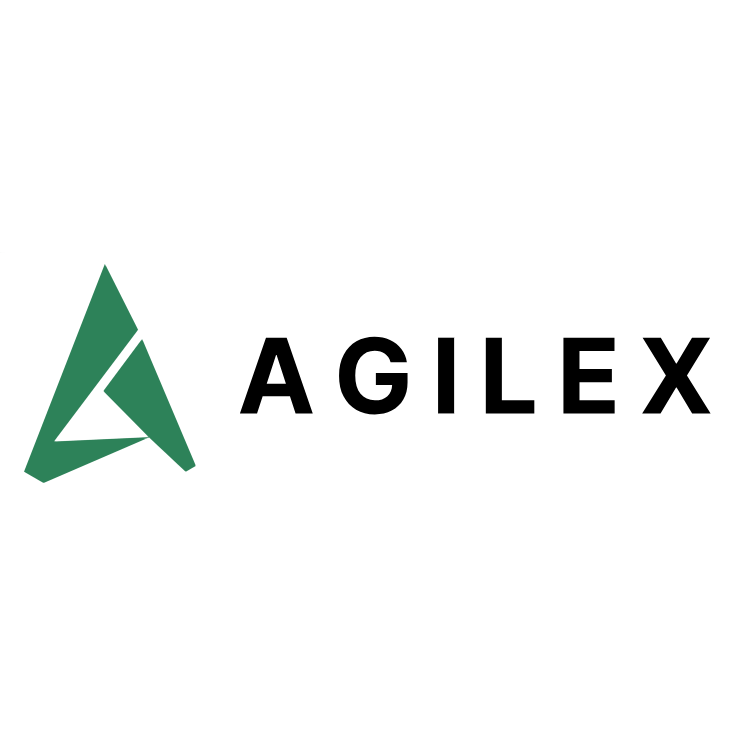

Hvem er jeg?
Jeg hedder Lukas, er 24 år og bor i Sakskøbing. Til daglig studerer jeg webudvikling på Zealand i Roskilde, hvor jeg fordyber mig i udvikling af moderne og funktionelle webløsninger. Her arbejder jeg med både frontend og backend og har særligt fokus på struktur, brugervenlighed og performance. Jeg brænder for at omsætte idéer til digitale løsninger, der både er teknisk solide og intuitive at bruge.
Jeg er uddannet multimediedesigner fra Zealand i Nykøbing F, hvor jeg har arbejdet med design, målgruppeforståelse, interfaceudvikling og test af prototyper. Kombinationen af min designmæssige baggrund og min tekniske overbygning inden for webudvikling giver mig en helhedsforståelse for digitale produkter og gør mig i stand til at skabe løsninger, der både er æstetisk tiltalende og funktionelle.
Jeg har erfaring med HTML, CSS, JavaScript og PHP, og jeg har arbejdet med frameworks som React, Vue og Laravel. Jeg er altid nysgerrig efter at lære nye teknologier og forbedre mine færdigheder inden for webudvikling.
Ved siden af studiet har sport altid fyldt meget i mit liv. Jeg spiller fodbold og har tidligere gået til gymnastik, hvilket har givet mig en stærk disciplin og holdånd. Jeg har også taget fodbolddommeruddannelsen og været aktiv dommer i en periode, hvilket har styrket min evne til at træffe beslutninger og bevare overblikket under pres.
Jeg er en engageret og ambitiøs person, der altid stræber efter at levere mit bedste. Jeg er vant til at arbejde både selvstændigt og i teams, og jeg trives i et miljø, hvor jeg kan bidrage med mine idéer og lære af andre. Jeg ser frem til at fortsætte min udvikling som webudvikler og skabe innovative løsninger, der gør en forskel for brugerne.
Mine projekter
Eksamens projekt på 1. semster af Webudvikling med temaet "find et udækket behov med fokus på bæredygtighed og lav en løsning til det".
I projektet er der lavet en app, der sakl hjælpe folk med at pante, da det er et område, hvor der er et stort behov for forbedring i forhold til bæredygtighed. Det primære formål med appen er at gøre det nemmere for folk der har langt til nærmeste pantstation, at få deres pant afleveret og dermed øge mængden af pant, der bliver afleveret. I appen kan brugerne oprette en profil, scanne deres pant og få det afhentet af en anden bruger, der så afleverer det på en pantstation.
I projektet er der arbejdet med både frontend og backend, hvor der er brugt VUE til frontend og API til backend. Udover det har er der også arbejdet med UX-principper som design og brugeroplevelse, hvor der har været fokuseret på at skabe en intuitiv og brugervenlig app.

Min arbejdserfaring

Fodbolddommer
December 2016 - Juni 2023
DBU Lolland-Falster
Lærer og pædagogvikar
August 2021 - Juni 2023
Guldborgsund Kommune
SoMe Assistent
August 2024 - April 2025
Business Lolland-Falster
Praktikant
Januar 2025 - April 2025
AgilexJuniorudvikler
Juni 2025 - Januar 2026
Agilex
Lukas William Pedersen
Webudvikler
24 år (27. oktober 2001)
Sakskøbing, Lolland
Multimediedesinger (PA)
Webudvikling (PBA),
- HTML, CSS, JavaScript
- React, Vue
- Laravel
- MySQL, API
- Meta og LinkedIn SoMe